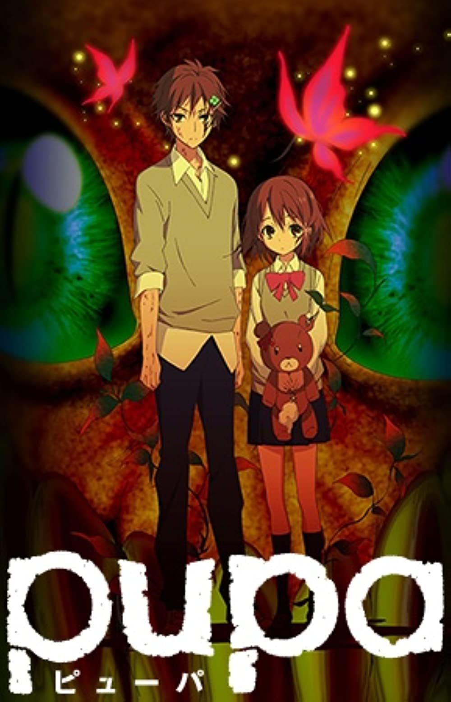
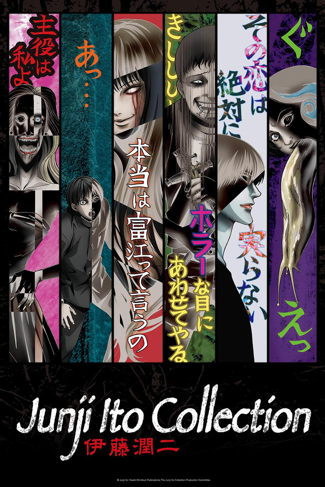
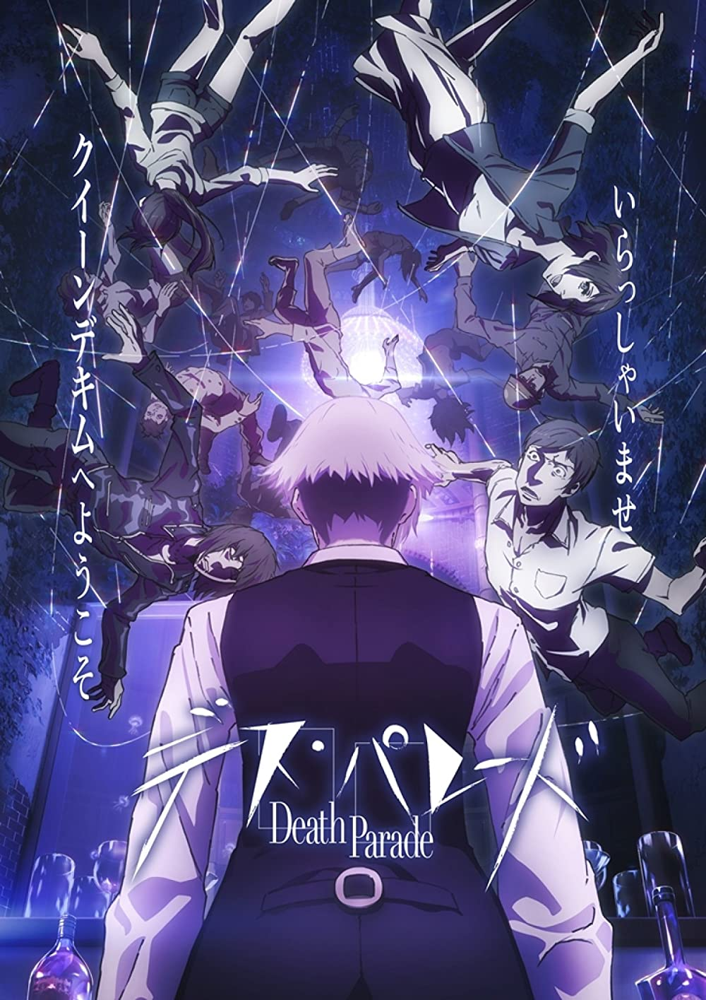

Junji Ito "Collection"
TV (12 eps x 4 min)
When Utsutsu and Yume were young, they were physically and emotionally abused by their sadistic father; and now that they’re older, Utsutsu swears above all else that he’ll protect his little sister at any cost. So when the girl is infected with the mysterious Pupa virus, causing her to turn into a terrifying monster that eats anything around her, the boy does the only thing he can: he offers his sister his body and flesh to consume. He won’t die, for Utsutsu was also infected with the virus, giving his body the superhuman ability to regenerate from any wound, and making himself the the perfect food source for his beloved sibling. Though nefarious researchers and doctors are studying their every move, Utsutsu will do whatever he can to keep the pupa inside of his sister from emerging and killing them all.
Source: Anime-Planet

Junji Ito "Collection"
TV (12 eps)
The works of one of the most famous Japanese horror manga artists, Junji Ito, finally gets animated! This will be an omnibus animation where each episode will star different protagonists such as the famous Tomie, Soichi, and Fuchi!
Source: Crunchyroll

Kakegurui
TV (12 eps)
When two people die at the same time, they're sent to a place that's neither heaven nor hell: a lavish bar between worlds where the stakes are high and the rules are simple: if you win you live again, if you die you're gone for good. Decim is the bartender charged with serving the souls who enter Quindecim. He may make a mean cocktail, but his true profession is to play the role of arbiter: a judge who determines whether or not a soul is worthy of reincarnation. To aid in his judgment, the bar's patrons are forced to play simple games laced with sadistic twists designed to bring their true natures to light. To Decim, judgment has always been black and white - that is until he meets a mysterious young woman whose fate seems impossible to decide. His indecision shakes the very foundation of the games and raises the biggest question of all: who is fit to judge the dead?
Source: Funimation
 Kakegurui
Kakegurui
TV (12 eps)
Hyakkaou Private Academy. An institution for the privileged with a very peculiar curriculum. You see, when you're the sons and daughters of the wealthiest of the wealthy, it's not athletic prowess or book smarts that keep you ahead. It's reading your opponent, the art of the deal. What better way to hone those skills than with a rigorous curriculum of gambling? At Hyakkaou Private Academy, the winners live like kings, and the losers are put through the wringer. But when Yumeko Jabami enrolls, she's gonna teach these kids what a high roller really looks like!
Source: Yen Press